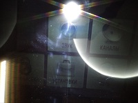
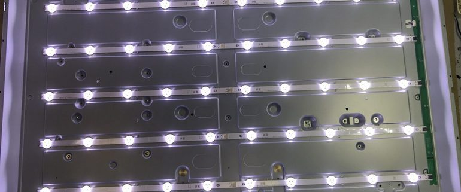

Ремонт подсветки LED телевизоров в Харькове от 50 грн.
Неисправность светодиодной подсветки - самая распространённая поломка современных телевизоров на сегодняшний день.
Определить что в телевизоре неисправна именно подсветка достаточно просто.

Если телевизор реагирует на пульт и включается, то надо подсветить экран светом фонарика и включить телевизор. При включении на экране обычно высвечивается логотип или приветствие и его можно будет разглядеть. Также, когда телевизор уже включен, можно нажать на пульте кнопку "Menu" или "Input", "Source" и увидеть соответствующую картинку.
И если на тёмном экране просматривается изображение, то вероятнее всего неисправна светодиодная подсветка.
Причины поломок светодиодной подсветки:
✔Выход из строя одного или нескольких светодиодов.
✔Неисправность драйвера подсветки.
✔Установленное в меню телевизора максимальное значение подсветки.
✔Выставленный изготовителем повышенный ток светодиодов.

Ремонт подсветки телевизора состоит в несколько этапов.
Производится диагностика телевизора и определяется причина поломки.
Если неисправен драйвер подсветки или нужен небольшой ремонт без демонтажа матрицы, то телевизор ремонтируется на месте.
Если необходим ремонт с полной разборкой телевизора и снятием матрицы, то ремонт как правило производится в мастерской. Потому что матрица довольно хрупкий элемент телевизора и велика вероятность повредить матрицу, проводя работы в неподходящих условиях.
Как происходит ремонт подсветки можно посмотреть на многочисленных видео в Ютуб.